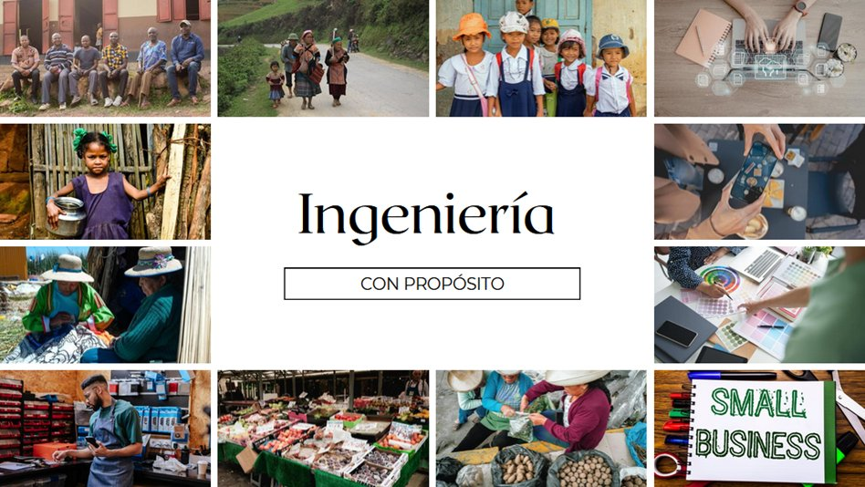

HUM-010 · Ética y Deontología Profesional · UCSUR · 2026-1
«Como navegantes con rumbo definido, construimos tecnología
que genere valor social — no solo rentabilidad.»
↓ Explorar manifiesto
La IES opera en la intersección entre tecnología y organización. Cada sistema que diseñamos, cada proceso que automatizamos, cada dato que gestionamos tiene consecuencias humanas reales en grupos que raramente tienen voz en las reuniones donde se toman esas decisiones.

Figura 2. «Ingeniería con Propósito» — elaboración propia del equipo.
Poblaciones vulnerables afectadas por decisiones en la IES (2026).
Desplazados por automatización sin planes de transición laboral ni capacitación. Los más invisibles en decisiones de digitalización empresarial.
Sistemas diseñados sin criterio de usabilidad real: interfaces complejas que excluyen a quienes más los necesitan.
Marginados de soluciones tecnológicas por costos. Representan el 96% de empresas en el Perú.
Afectada por métricas maquilladas en licitaciones y gestión pública donde la posverdad distorsiona la realidad.
Figura 3. Grupos vulnerables. Basado en INEI (2023) y PRODUCE (2022).
Scheler sostiene que los valores tienen una jerarquía objetiva, independiente de nuestras preferencias. El ingeniero ético no elige los valores por conveniencia — los reconoce y los defiende incluso cuando el sistema presiona en sentido contrario.
Todo proyecto debe demostrar rentabilidad, eficiencia o reducción de costos. Sin generación de valor económico, no puede sostenerse en el tiempo.
rentabilidad · eficiencia · costosUn producto no solo debe funcionar — debe ser atractivo, cómodo y deseable. Impacta en la adopción, fidelización y percepción de valor del usuario.
usabilidad · diseño · experienciaResolver problemas reales y cubrir necesidades esenciales de quienes usan el sistema — la razón de ser de la ingeniería.
funcionalidad · utilidad · necesidadGuían el desarrollo y propósito de las soluciones. Son medios importantes que influyen, aunque no determinan directamente el éxito empresarial.
ética · innovación · visiónCreencias profundas que definen quiénes somos como profesionales. Aunque con menor impacto directo en decisiones empresariales, son el núcleo de la identidad ética.
principios · identidad · convicciónEste mapa es un ejercicio de honestidad intelectual colectiva. Miramos con rigor el campo real de la IES en el Perú: identificamos las fallas éticas que lo atraviesan, nombramos las falacias que las sostienen, las conectamos con las poblaciones que afectan, y proponemos las acciones positivas que podríamos realizar.
«Los prisioneros en la caverna confunden sombras con realidad. ¿Qué sombras normalizadas nos impiden ver las fallas éticas de nuestro propio campo?»
— Platón, La República, Libro VII
| Negligencia o falla ética | Falacia que la sostiene | Población afectada (AC2) | La «sombra» de la caverna |
|---|---|---|---|
| Implementación de sistemas sin análisis real del usuario — solo para cumplir plazos o reducir costos | Apelación a la autoridad"La gerencia lo pidió así, no se cuestiona" | Trabajadores operativos y usuarios sin formación digital | Obedecer sin cuestionar es confundido con profesionalismo |
| Manipulación o maquillaje de datos para mostrar resultados favorables en reportes | PosverdadSe prioriza la percepción de éxito sobre la realidad | Clientes, inversionistas y ciudadanía en proyectos públicos | Los indicadores maquillados se vuelven la única "realidad" reconocida |
| Automatización sin considerar el impacto laboral — despidos masivos sin transición | Falacia naturalista"La tecnología siempre reemplaza, es lo normal" | Trabajadores de baja especialización | La eficiencia como valor supremo oculta el costo humano |
Figura 5. Mapa de negligencias éticas — IES, Perú. Elaboración propia (2026).
Basado en PRODUCE (2022), Transparencia Internacional Perú (2023) y MTPE (2023).
Pruebas piloto con usuarios reales, capacitaciones inclusivas y validación con los trabajadores afectados antes de implementar cualquier sistema.
Auditorías internas, reportes con datos verificables y estándares de ética en analítica que no cedan ante presiones de resultado.
Programas de reconversión laboral y planes de capacitación que acompañen cada proceso de automatización en lugar de invisibilizar su impacto humano.
«¿Los sistemas y estrategias que implementamos generan valor social real, o solo responden a intereses económicos?»
Como futuros ingenieros empresariales y de sistemas, entendemos que nuestra carrera, como un navegante con rumbo definido (telos), tiene el propósito de crear soluciones con sentido y dirección clara. Nos comprometemos a desarrollar tecnología inclusiva que atienda a las poblaciones más vulnerables, cerrando brechas digitales y promoviendo oportunidades equitativas. Guiados por valores como la ética, la justicia y la responsabilidad social, reconocemos también las fallas presentes en nuestro campo profesional —como la exclusión digital o el uso indebido de información— y asumimos el compromiso de construir sistemas que equilibren el rendimiento empresarial con el bienestar humano, generando un impacto positivo y sostenible en la sociedad.